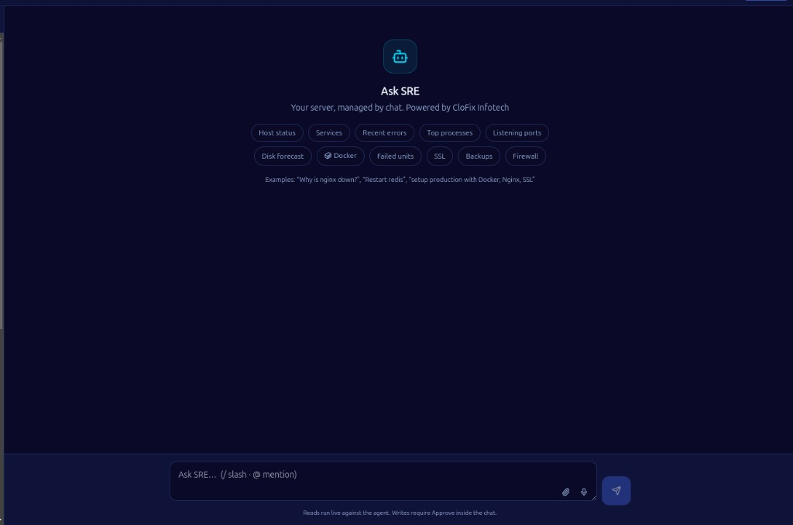

MSPs / MSSPs
Multi-tenant fleets under one license and org model.
Your server, managed by chat.
Diagnose → Approve → Fix → Verify - with human control on every write. MSP-grade DevOps & Autonomous AI SRE to monitor, secure, troubleshoot, and operate your fleet from one place.

Ask SRE - your server, managed by chat
A full DevOps control plane with an Autonomous AI SRE at the center. Operators talk to servers in natural language. CloFix One gathers real host evidence through an outbound agent, explains the root cause, proposes a safe fix plan, waits for human approval, executes only allowlisted actions, and verifies the result - then drafts a postmortem.
No blind automation. No invented host state. No browser SSH for AI operations. AI proposes. Humans approve. Agents execute - only what’s allowed.
Organization → Client → Environment → Server → Service tenancy for multi-tenant and enterprise fleets.
Multi-tenant fleets under one license and org model.
Chat-first incident response with full audit trails.
Servers, websites, SSL, SSH, security, and tickets in one UI.
Agents, dashboards, AI, GitOps, and licensing together.
Autonomous AI SRE with human approval - plus a full DevOps platform in one pane of glass.
Natural-language SRE. Select a server, describe the symptom, get evidence-backed answers and fix plans - with slash commands, @ mentions, and inline cards.
Playbook-driven investigation: probes → hypotheses → remediation → risk stamp → Approve → precheck → execute → verify desired state.
Per-conversation memory of environment, stack, and desired state. Long setup asks become structured Story → Plan workflows.
Allowlisted start/stop/restart/reload with mutex awareness (e.g. stop Apache before Nginx on port 80) - still requires Approve.
Org knowledge base and approved config patterns inform answers. Knowledge never executes on hosts.
Lightweight agent per host: metrics, heartbeat, allowlisted shell, files, Docker, K8s read, packages, config apply. Hosts connect out - no inbound SSH for AI SRE.
Fix incidents in conversation - with proof, not guesses.
| Feature | Capability |
|---|---|
| Incident diagnose | Real probes via online agent - metrics, logs, services, ports, failed units, HTTP local checks |
| Root-cause analysis | Structured hypothesis ranking with confidence and cited evidence IDs |
| Fix plans | Allowlisted steps only; risk from read-only to critical |
| Human Approve | Every write waits on Approve / Reject (or type fix) |
| Execute & verify | Prechecks, live step output, verify active/desired state, postmortem draft |
| One run per server | No overlapping diagnose/execute chaos on the same host |
| Guardrails | Jailbreak / destructive-intent guard before planning |
Fleet + AI SRE + Security Hub + VAPT + GitOps in one product.
Clients, environments, servers, services, file manager, web terminal + audit.
Thresholds, alerts, logs, website uptime, domains, SSL expiry (30/14/7/0).
Scripts, jobs, workflows, config templates, and builds.
Deployments, GitOps, Docker, Kubernetes, cloud accounts.
Sessions, attacks, auth, users, keys, policies, alerts, audit.
Security Hub presets plus VAPT Lab with PDF/JSON/CSV reports.
Incidents, RCA, backups, Kanban tasks, reports, operations wallboard.
Vault, credential vault, temporary password share.
Users, RBAC, audit logs, licensing, plus Tools Hub utilities.
Reads are live. Writes wait for you.
| Control | Behavior |
|---|---|
| Human Approve for writes | Restarts, stops, config edits, package installs, workflows, generated scripts |
| Reads run live | Status, metrics, logs, and diagnostics do not need Approve |
| Dual allowlists | API and Go agent both reject forbidden commands and units |
| Risk stamping | Read-only → low → medium → high → critical; high/critical always Approve |
| Config six gates | Path allowlist · size/diff limits · syntax check · human diff · backup+atomic write · verify + rollback |
| Knowledge never executes | RAG / library / articles inform planning only |
| Hash-chained audit | AI runs, terminal, config apply/rollback, and platform actions |
| Online agent required | Offline hosts are not “faked healthy” or silently fixed |
Dashboard never SSH’s into hosts for AI SRE. Agents enroll and keep a persistent outbound connection.
License server signs plans: Free → Person → Standard → Team → Enterprise / MSSP.
Chat → Diagnose → Analyze → Propose → Approve → Execute → Verify → Postmortem - one controlled run.
Describe the symptom in natural language inside Ask SRE.
Outbound agent runs live probes: metrics, logs, services, ports, failed units.
Rank hypotheses with confidence and cited evidence IDs.
Build an allowlisted fix plan with risk stamped from read-only to critical.
Human reviews the plan - Approve or Reject before any write.
Prechecks run, then only approved allowlisted actions execute on the host.
Confirm active/desired state - not just exit code 0.
Draft a postmortem and keep knowledge for the next incident.
Talks to real hosts via agent; cites probe evidence.
Approval gates, mutex awareness, config rollback, audit chain.
Diagnose and remediate in the same run.
Fleet + AI SRE + Security Hub + VAPT + GitOps in one product.
Every write is allowlisted, risk-rated, and audited. Request a demo of CloFix One Ask SRE.